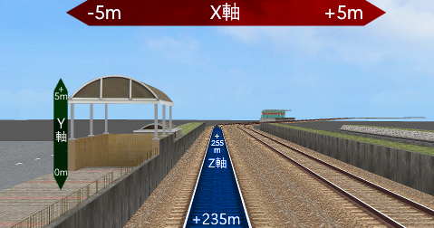
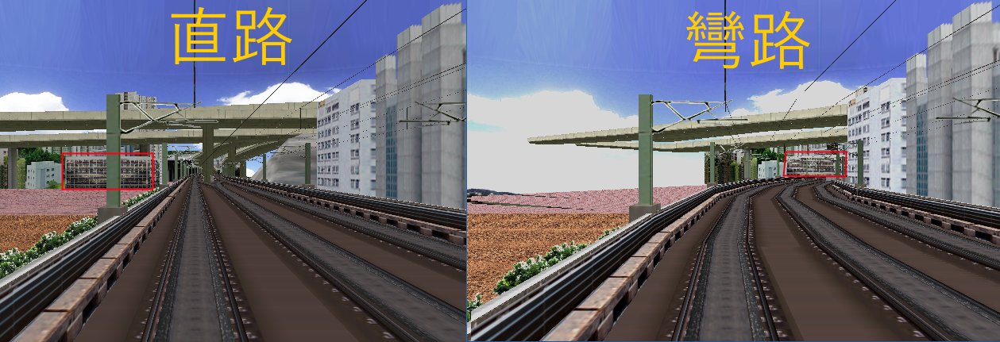

座標系在OpenBVE中有3個參數，而每個參數(軸)亦代表不同方向。
X軸: 左/右 (右=正數, 左=負數)
Y軸: 上/下 (上=正數, 下=負數)
Z軸: 前/後 (前=正數, 後=負數)
注: OpenBVE使用的大部份單位為米(m)，而玩家軌道的高度預設為0m。
例子: 在此路線的500米，有一個物件位於玩家軌道右邊的10米，即代表以下數值:
X: 10(m)
Y: 0(m)
Z: 500(m)

與其他遊戲不同，遊戲物件的位置是基於玩家路軌的位置。
而所有路線中的物件都是以"位於玩家軌道的左/右/上/下XX米"的邏輯來放置
如果玩家的路軌修改到由直變彎，所有的景物亦會跟著轉彎，如圖片所示。
與其他遊戲不同，遊戲物件的位置是基於玩家路軌的位置。
而所有路線中的物件都是以"位於玩家軌道的左/右/上/下XX米"的邏輯來放置
如果玩家的路軌修改到由直變彎，所有的景物亦會跟著轉彎，如圖片所示。